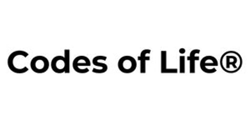
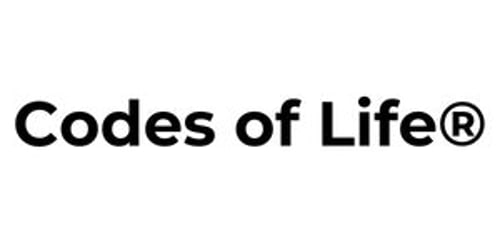

(Noch) nicht bekannt aus:


Wir bauen keine Luftschlösser. Wir bauen KI-Infrastruktur für Wachstum, die funktioniert. scale2 macht KI für etablierte Unternehmen greifbar, umsetzbar und profitabel. Ohne den Tech-Bubble-Jargon.
Den Maschinenraum sehen
Träume verkaufen. Buzzwords stapeln. Tools installieren, die nach 2 Wochen verstauben. "KI-Transformation" versprechen und PowerPoints liefern.
Systeme bauen. Ein Business ist kein Produkt -es ist ein reproduzierbarer Mechanismus. Wenn deine KI-Strategie mehr Arbeit verursacht, als sie löst, hast du kein System. Sondern ein Hobby.
Wir maximieren den Zähler. Und eliminieren den Nenner.
Wir finden das eine Nadelöhr, das dein Wachstum begrenzt. Nicht fünf Baustellen gleichzeitig. Einen Engpass. Den richtigen.
Wir setzen keine Tools ein. Wir bauen Infrastruktur, die autonom arbeitet. Systeme, die ohne dich funktionieren -nicht wegen dir.
Wiederholung schlägt Erfindung. Ein System, tausendfach ausgeführt. Keine neuen Ideen -bessere Systeme.
Lead-Generierung, Outreach-Sequenzen, Content-Produktion -alles automatisiert. Dein Vertrieb arbeitet rund um die Uhr, ohne dass du Leute einstellst.
Prozesse, die dein Team ausbremsen, werden systematisiert. Weniger Klicks, weniger Fehler, weniger "Das haben wir schon immer so gemacht."
Support-Anfragen beantworten sich selbst. Tickets werden intelligent geroutet. Deine Kunden bekommen schnellere Antworten, dein Team mehr Luft.
KI ersetzt keine Menschen, sondern Zeitverschwendung.
Ein Auszug aus Unternehmen, in denen wir bereits KI-Infrastrukturen gebaut, optimiert und erfolgreich implementiert haben.
 


Ich habe in den letzten Jahren für über ein Dutzend Unternehmen Technik-Infrastrukturen gebaut, Prozesse automatisiert und KI dort eingesetzt, wo sie echten Impact hat -nicht dort, wo sie gut klingt.
Mein Ansatz ist einfach: Kein Buzzword-Bingo, kein Overengineering. Ich schaue mir an, was dein Business bremst, und baue ein System, das dieses Problem eliminiert. Punkt.
scale2 ist keine klassische Agentur. Wir sind ein kleines Team aus drei Leuten -und das ist Absicht. Vom KI-Automationen über autonome Agenten bis hin zu individuellen Software-Lösungen ergänzen wir uns perfekt. Kein Wasserkopf, keine Abstimmungsschleifen. Nur Leute, die liefern.
Unsere Kunden wollen nicht "irgendwas mit KI machen". Sie wollen Ergebnisse - messbar, skalierbar, ab Tag 1.
Vom manuellen Tagesgeschäft zur automatisierten Abwicklung. KI-Infrastruktur ersetzt 14 manuelle Workflows -branchenübergreifend.
KI-gestütztes Lead-Scoring und automatisierte Nachfass-Sequenzen. Von "Hoffnung" zu "Vorhersehbarkeit".
Reporting, Datenaufbereitung, Kundenkommunikation -alles systematisiert. Der Gründer macht wieder Strategie statt Admin.
"Wachstum braucht keine neuen Ideen.
Es braucht bessere Systeme."
Wenn wir nicht klar definierte Effizienzsteigerungen messen können, haben wir unseren Job nicht gemacht. Wir werden für Ergebnisse bezahlt, nicht für Stunden.
Kein Sales-Pitch. Kein Gedöns. Nur ein Gespräch auf Augenhöhe, um herauszufinden, ob wir dir helfen können.
Erstgespräch vereinbaren